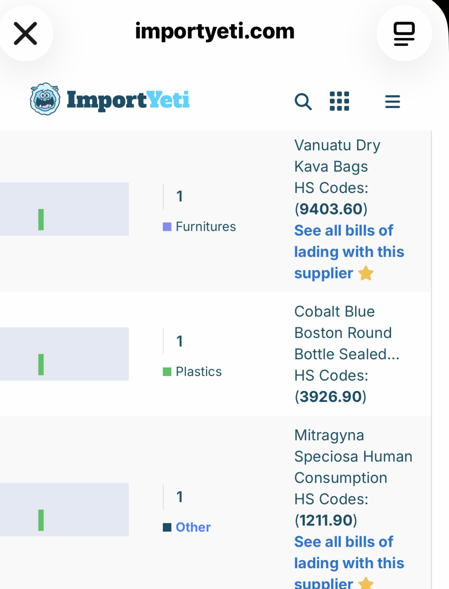
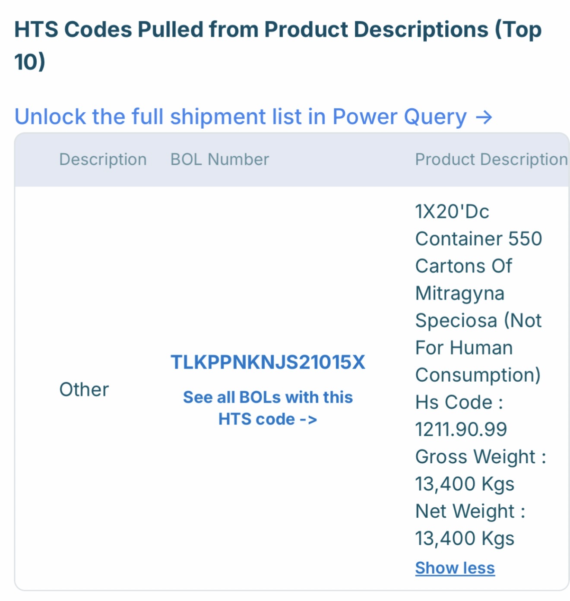

What One Bill of Lading Reveals About Kratom Imports and the FDA's Import Alert 54-15.
One of the most common questions I hear is:
"If the FDA has had Import Alert 54-15 covering kratom for years, how is so much of it still entering the United States?"
The answer is not simple. Public shipping records do not prove customs fraud or regulatory violations, but they can reveal how products move through the international supply chain and identify questions worth asking.
Recently, I reviewed the publicly available import history for Botanic Tonics, the manufacturer of Feel Free. Buried among hundreds of shipping records was one Indonesian shipment that deserves a closer look.
According to ImportYeti, Botanic Tonics has imported 249 ocean shipments between March 2022 and July 2026, with most consisting of glass bottles, caps, plastics, and packaging — not botanical ingredients. But among those hundreds of records, one shipment stood out.
ImportYeti identifies the Indonesian supplier as:
PT. Silah Meh Nuan
Pontianak, West Kalimantan, Indonesia.
In the supplier summary, the shipment is described as:
Mitragyna speciosa – Human Consumption
under HTS heading 1211.90.

At first glance, the shipment appears straightforward. But opening the detailed bill of lading reveals something unexpected.
Clicking into the detailed shipment reveals the actual bill of lading.
Instead of "Human Consumption," the shipment is described as:
Botanic Tonics – ImportYeti Company Profile →

The contradiction isn't subtle. These appear to be two views of the same shipment, yet one describes the product as intended for human consumption while the other explicitly states the opposite. The supplier is the same, the product is the same, the HTS heading is the same, and only one Indonesian shipment appears in Botanic Tonics' import history.
The most charitable explanation is that ImportYeti's automated summary omitted the word "Not." But without the original customs entry documents, the true reason cannot be determined. The contradiction itself is a matter of public record.
FDA Import Alert 54-15 is a Detention Without Physical Examination (DWPE) alert covering dietary supplements and bulk dietary ingredients containing kratom.
That raises an obvious and uncomfortable question.
If bulk Mitragyna speciosa is entering the United States under documentation stating "Not For Human Consumption," how is FDA evaluating those entries?
Public shipping records cannot answer that. They were never designed to.
The bill of lading does not tell us:
Those answers require government records. Not speculation. But the public has a right to ask.
PT. Silah Meh Nuan appears to be an Indonesian kratom exporter based in Pontianak, West Kalimantan.
Public business directories advertise multiple kratom products including red, green, yellow, and white vein varieties. The company presents itself as a commercial kratom supplier serving international buyers.
Trade databases also show exports to buyers in Europe and the United States, suggesting this was not an isolated export.
Public trade records indicate that the phrase "Not For Human Consumption" has appeared on other Mitragyna speciosa shipments associated with this supplier. This wording appears to represent a recurring shipping practice, not something unique to Botanic Tonics.
This shipment alone contained 13.4 metric tons—nearly 30,000 pounds—of kratom.
Botanic Tonics – ImportYeti Company Profile →
That raises an uncomfortable question:
How old is the kratom in a bottle of Feel Free?
If this shipment was incorporated into production and inventory over time, products sold years later could have contained material imported years earlier. That is not an accusation. It is a question of basic supply chain transparency.
Public records do not establish that a bottle purchased today contains kratom from this shipment. They also do not reveal how quickly Botanic Tonics processed the material, whether it was blended with later imports, or how long inventory remained in storage.
Consumers generally assume botanical products are relatively fresh. Without greater transparency, there is no public way to determine the age of the raw kratom used in any particular bottle. That alone is a problem worth examining.
The available evidence does not prove customs fraud.
It does not prove tariff evasion.
It does not prove that FDA Import Alert 54-15 was circumvented.
What it does show is that nearly 13.4 metric tons of Mitragyna speciosa were imported by the manufacturer of Feel Free under a bill of lading describing the material as "Not For Human Consumption."
Botanic Tonics – ImportYeti Company Profile →
That alone justifies asking several straightforward questions:
Those questions deserve answers. The public deserves to know what is in its supply chain.
Public shipping records are only one piece of the picture. They cannot tell us how FDA evaluated this shipment or how the imported material was ultimately used. But they do provide a starting point for asking informed questions. Those questions can—and should—be answered through FDA records, Customs records, and greater transparency from manufacturers.